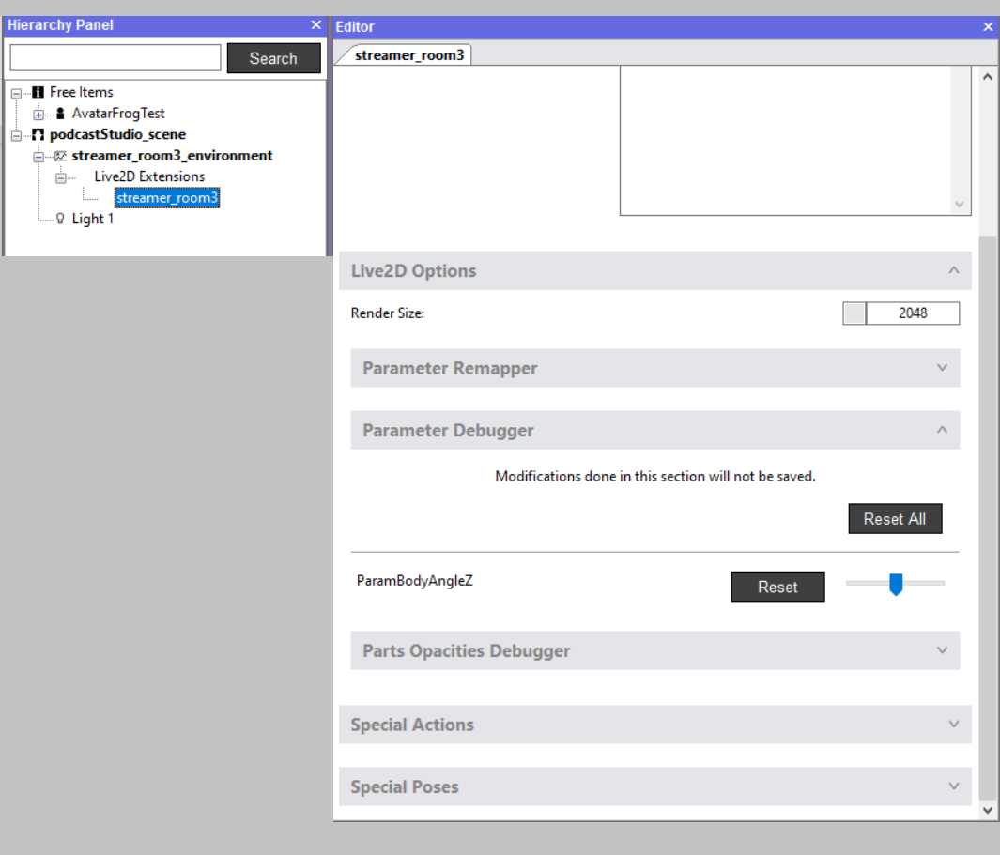

Create a backdrop with animated elements that are linked to Tracking Data

This is just like a static 2D background, except instead of loading 2D images in the Import SkyBox 2D window, and/or in the 2D overlay item in your scene you can select Live2D models.
For any Live2D model that you will load as an image, a Live2D Extension sub-item will appear in the Hierarchy Panel. The properties of this sub-item will allow you to configure the Live2D model just like a full Live2D avatar, and link its behavior to Tracking Data.
For more information on configuring Live2D avatars please see our documentation here.
To learn more about such Live2D assets, here is the link to our sample models.